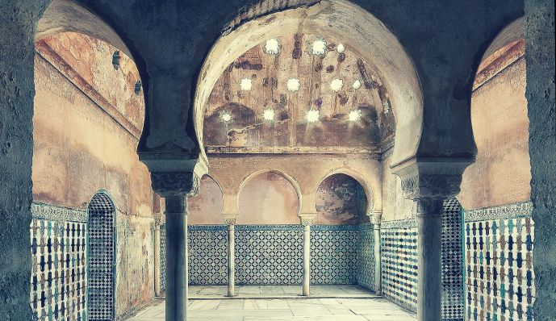

| |
Alhambra. Patrimonio de la Humanidad |
|---|

| |
Alhambra. Patrimonio de la Humanidad |
|---|

Entre las singularidades de la arquitectura islámica que se conservan en la Alhambra destaca especialmente el hammam: el baño de Comares, llamado hasta no hace mucho tiempo Baño Real por haberlo reservado para su uso particular los Reyes Católicos. Hoy sabemos que cada palacio de la Alhambra disponía de su propio hammam, pero éste es el único baño medieval islámico que se ha conservado prácticamente íntegro en Occidente. Tomado por la cultura islámica de las termas romanas, pronto se convirtió en un elemento fundamental del mundo musulmán.
Las estancias del baño de la Alhambra, por su estado de conservación y especial naturaleza, con el fin de preservarlas lo mejor posible, no se visitan habitualmente, aunque sí se pueden contemplar desde otros espacios a través de huecos.
Ubicado entre los palacios de Comares y de los Leones, cerca de las habitaciones del palacio, tiene una puerta directa al patio, junto a la crujía en la que residía y gobiernaba el sultán.
Este baño ha conservado bastante bien todos sus elementos, con las modificaciones estructurales propias de un cambio de uso y de un mantenimiento más testimonial que funcional. La entrada, al mismo nivel del patio de los Arrayanes, conduce a un primer espacio vestibular donde desvestirse, con una alcoba para ello, y una letrina apartada y aireada.
Desde este primer apoditerio se desciende mediante una pronunciada escalera a la sala de reposo, llamada bayt al-maslaj, que es, quizá, el lugar más destacado del baño, y aquí se llama sala de las Camas, por los dos amplios aposentos ligeramente elevados que flanquean la estancia principal.
Todo este espacio está aireado e iluminado cenitalmente por una linterna central, muy frecuente en la arquitectura nazarí. Los elementos decorativos de la sala, fuente, pavimentos, columnas, alicatados y yeserías son en gran parte originales, aunque techos y yeserías fueron reparados y repintados con vivos colores en la segunda mitad del siglo XIX. Las puertas que flanquean a las camas forman parte de la estructura original del baño: además de la de acceso, su paralela abre a un almacén de servicio; las fronteras conducen a una letrina emplazada tras la alcoba, y a las cámaras de vapor del baño.
Toda la zona de vapor del hammam está cubierta con bóvedas horadadas con multitud de tragaluces, ligeramente cónicos, con formas lobulares y estrelladas. Dotadas de cristales practicables en la cara exterior, los servidores del baño las abrían o cerraban para regular el ambiente de vapor de las salas.
Le sigue un espacio reducido y de paso, llamado bayt al-barid, dotado de una pila con agua fría, al que sucede la zona central del baño o bayt al-wastani, estancia amplia y caldeada con un ámbito central flanqueado por sendas arquerías de triple arco de herradura ligeramente apuntada.
Frente al vano de acceso, otro conduce a la última sala caldeada del baño, la bayt al-sajun, a cuyos extremos, bajo amplios iwanes, dos grandes pilas vertían a voluntad agua fría y caliente. Bajo el suelo de esta sala está situado el hipocausto, junto al que se emplazan, tras el arco cegado del fondo, el horno (al-furn) y la caldera, en cuya proximidad se dispone de una leñera para almacenar la materia de combustión, con la consiguiente puerta trasera de servicio.
Las salas de vapor tienen solerías de mármol bajo las que discurren conductos para mantener el calor, por lo que en estas salas se debía usar calzado de suela gruesa. De la misma forma, en los muros se instalan canalizaciones de barro de diferentes tamaños y secciones, para conducir el aire caliente y el vapor de la caldera y alcanzar la temperatura y la humedad necesarias para el baño.
En el siglo XVI se renovaron algunos zócalos cerámicos de estas salas, en alguno de los cuales se puede leer abreviado el “Plus Ultra” imperial, y se habilitó una moderna salida, a través del colindante patio de Lindaraja.
Por su singularidad, el Baño de Comares ha sido para visitantes y artistas uno de los principales lugares de fascinación de toda la Alhambra. Desde el seducido Jerónimo Münzer en 1494, hasta el vanguardista Henry Matisse en 1910 quedaron cautivados por la atmósfera y el misterio de su luz. La nómina de representantes de las artes plásticas que plasmaron sus impresiones es muy extensa; baste con señalar las planchas de Alexandre Laborde (1812), los apuntes de Richard Ford (1831) o el plano que levantó James Cabannah Murphy (1813) con detalles como el circuito de canalizaciones o la caldera del baño.